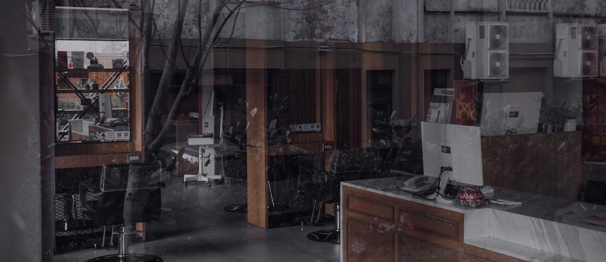

Quienes Somos
Pero debo explicar a usted cómo nació toda esta idea equivocada de la denuncia de placer y alabar dolor, una cuenta completa del sistema, y exponer las enseñanzas reales del gran explorador de la verdad y a desarrollarse en el maestro de obras de la felicidad humana. Para nadie rechaza, no le gusta, o evita el placer mismo, ya que es el placer, sino porque no saben cómo buscar el placer racional encontrarse con consecuencias que son los dolores de los que tienen.
"El diseño debe reflejar lo práctico y lo estético en los negocios, pero sobre todo ... el buen diseño debe servir principalmente a las personas".